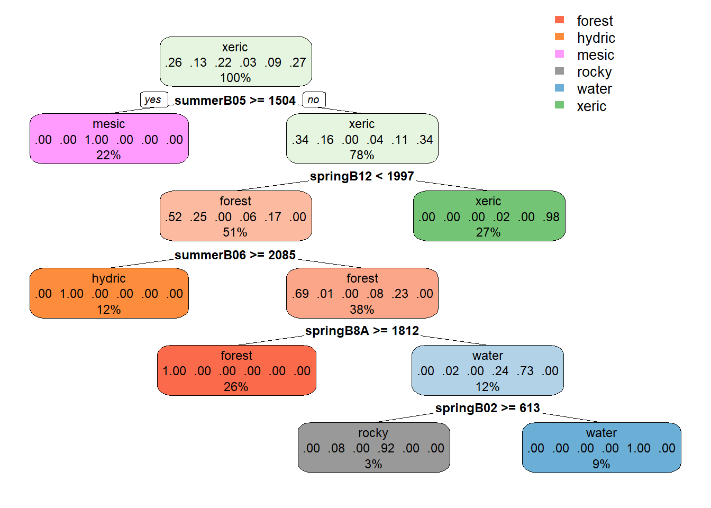
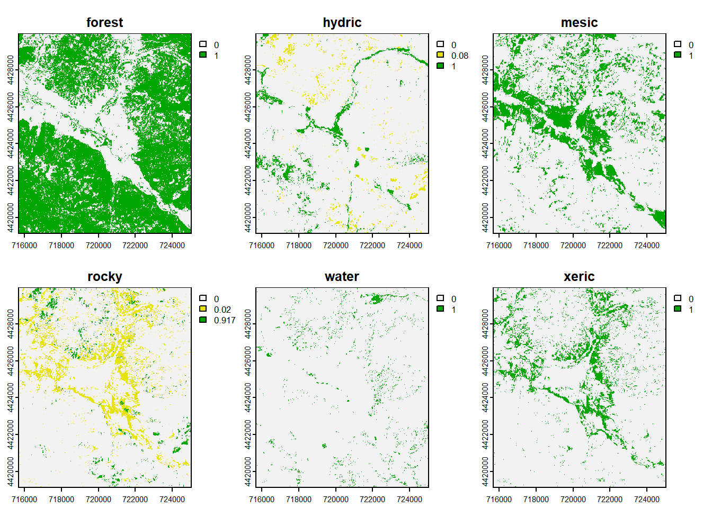
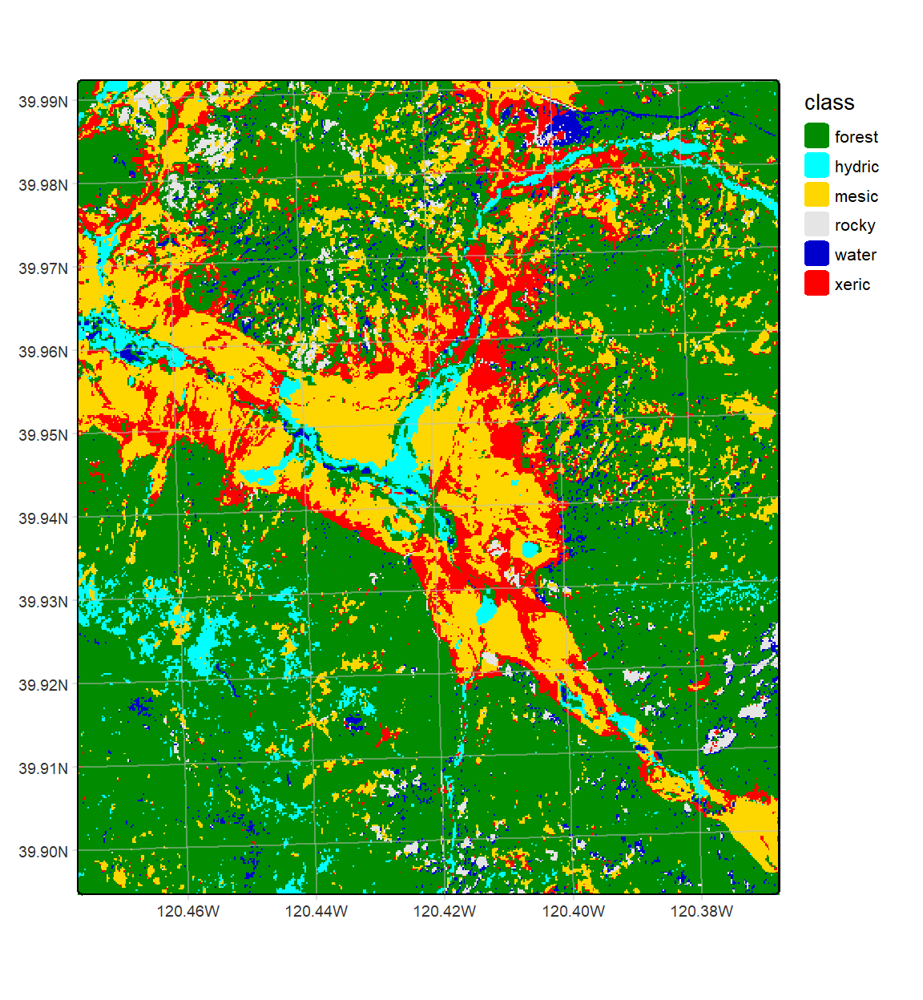

10 Imagery Classification Testing
## Warning: package 'terra' was built under R version 4.3.3## terra 1.7.71imgFolder <- paste0("S2A_MSIL2A_20210628T184921_N0300_R113_T10TGK_20210628T230915.",
"SAFE\\GRANULE\\L2A_T10TGK_A031427_20210628T185628")
img20mFolder <- paste0("~/sentinel2/",imgFolder,"\\IMG_DATA\\R20m")
imgDateTime <- str_sub(imgFolder,12,26)
imgDateTime## [1] "20210628T184921"sentinelBands <- paste0("B",c("02","03","04","05","06","07","8A","11","12"))
sentFiles <- paste0(img20mFolder,"/T10TGK_",imgDateTime,"_",
sentinelBands,"_20m.jp2")
sentinel <- rast(sentFiles)
sentinelBands## [1] "B02" "B03" "B04" "B05" "B06" "B07" "B8A" "B11" "B12"Spring
library(terra); library(stringr); library(igisci)
imgFolderSpring <- paste0("S2B_MSIL2A_20210603T184919_N0300_R113_T10TGK_20210603",
"T213609.SAFE\\GRANULE\\L2A_T10TGK_A022161_20210603T185928")
img10mFolderSpring <- paste0("~/sentinel2/",imgFolderSpring,"\\IMG_DATA\\R20m")
imgDateTimeSpring <- str_sub(imgFolderSpring,12,26)Summer
imgFolderSummer <- paste0("S2A_MSIL2A_20210628T184921_N0300_R113_T10TGK_20210628",
"T230915.SAFE\\GRANULE\\L2A_T10TGK_A031427_20210628T185628")
img10mFolderSummer <- paste0("~/sentinel2/",imgFolder,"\\IMG_DATA\\R20m")
imgDateTimeSummer <- str_sub(imgFolderSummer,12,26)sentinelBands <- paste0("B",c("02","03","04","05","06","07","8A","11","12"))
sentFilesSpring <- paste0(img10mFolderSpring,"/T10TGK_",
imgDateTimeSpring,"_",sentinelBands,"_20m.jp2")
sentinelSpring <- rast(sentFilesSpring)
names(sentinelSpring) <- paste0("spring",sentinelBands)
sentFilesSummer <- paste0(img10mFolderSummer,"/T10TGK_",
imgDateTimeSummer,"_",sentinelBands,"_20m.jp2")
sentinelSummer <- rast(sentFilesSummer)
names(sentinelSummer) <- paste0("summer",sentinelBands)RCVext <- ext(715680,725040,4419120,4429980)
sentRCVspring <- crop(sentinelSpring,RCVext)
sentRCVsummer <- crop(sentinelSummer,RCVext)10.0.1 Create a 18-band stack from both images
Since we have two imagery dates , we have a total of 18 variables to work with. So we’ll put these together as a multi-band stack simply using c() with the various bands.


10.0.2 Extract the training data (20 m spring + summer)
We’ll repeat some of the steps where we read in the training data and set up the land cover classes, reducing the 7 to 6 classes, then extract from our new 20-band image stack the training data.
library(igisci)
trainPolys <- vect(ex("RCVimagery/train_polys7.shp"))
ptsRCV <- spatSample(trainPolys, 1000, method="random")
LCclass <- c("forest","hydric","mesic","rocky","water","willow","xeric")
classdf <- data.frame(value=1:length(LCclass),names=LCclass)
trainPolys <- vect(ex("RCVimagery/train_polys7.shp"))
trainPolys[trainPolys$class=="willow"]$class <- "hydric"
ptsRCV <- spatSample(trainPolys, 1000, method="random")
LCclass <- c("forest","hydric","mesic","rocky","water","xeric")
classdf <- data.frame(value=1:length(LCclass),names=LCclass)
extRCV <- terra::extract(sentRCV, ptsRCV)[,-1] # REMOVE ID
sampdataRCV <- data.frame(class = ptsRCV$class, extRCV)10.0.3 CART model and prediction (20 m spring + summer)
library(rpart)
# Train the model
cartmodel <- rpart(as.factor(class)~.,
data = sampdataRCV, method = 'class', minsplit = 5)The CART model tree for the two-season 20 m example (Figure 10.1), in contrast with the 10 m classification, does not end up with a few pixels classified as “rocky” (Figures 10.2 and 10.3).
## Warning: package 'rpart.plot' was built under R version 4.3.3
FIGURE 10.1: CART decision tree, Sentinel 20-m, spring and summer 2021 images

FIGURE 10.2: CART classification, probabilities of each class, Sentinel-2 20 m, 2021 spring and summer phenology
LCpheno <- which.max(CARTpred)
cls <- names(CARTpred)
df <- data.frame(id = 1:length(cls), class=cls)
levels(LCpheno) <- df## The legacy packages maptools, rgdal, and rgeos, underpinning the sp package,
## which was just loaded, will retire in October 2023.
## Please refer to R-spatial evolution reports for details, especially
## https://r-spatial.org/r/2023/05/15/evolution4.html.
## It may be desirable to make the sf package available;
## package maintainers should consider adding sf to Suggests:.
## The sp package is now running under evolution status 2
## (status 2 uses the sf package in place of rgdal)##
## Attaching package: 'tmap'## The following object is masked from 'package:datasets':
##
## riversLCcolors <- c("green4","cyan","gold","grey90","mediumblue","red")
tm_shape(LCpheno) +
tm_raster(col="class",
col.scale=tm_scale_categorical(values=LCcolors),
col.legend=tm_legend(frame=F)) +
tm_graticules(alpha=0.5, col="gray")
FIGURE 10.3: CART classification, highest probability class, Sentinel-2 20 m, 2021 spring and summer phenology
We might compare this plot with the previous 20 m (Figure ??), 10 m (Figure ??), and 10 m spring+summer classification (??).
10.0.3.1 Cross validation : CART model for 20 m spring + summer
set.seed(42)
k <- 5 # number of folds
j <- sample(rep(1:k, each = round(nrow(sampdataRCV))/k))
# table(j)x <- list()
for (k in 1:5) {
train <- sampdataRCV[j!= k, ]
test <- sampdataRCV[j == k, ]
cart <- rpart(as.factor(class)~., data=train, method = 'class',
minsplit = 5)
pclass <- predict(cart, test, na.rm = TRUE)
# assign class to maximum probablity
pclass <- apply(pclass, 1, which.max)
# create a data.frame using the reference and prediction
x[[k]] <- cbind(test$class, as.integer(pclass))
}10.0.3.2 Accuracy metrics : CART model for 20 m spring + summer
Finally, as we did above, we’ll look at the various accuracy metrics for the classification using the two-image (peak-growth spring and senescent summer) source.
Confusion Matrix
y <- do.call(rbind, x)
y <- data.frame(y)
colnames(y) <- c('observed', 'predicted')
conmat <- table(y) # confusion matrix# change the name of the columns and rows to LCclass
if(length(LCclass)==dim(conmat)[2]){
colnames(conmat) <- LCclass}else{
print("Confusion matrix column dimension/LCclass array mismatch")
print(str(LCclass))
print(str(conmat))
}
if(length(LCclass)==dim(conmat)[1]){
rownames(conmat) <- LCclass}else{
print("Confusion matrix row dimension/LCclass array mismatch")
print(str(LCclass))
print(str(conmat))
}## predicted
## observed forest hydric mesic rocky water xeric
## forest 97 1 0 0 1 0
## hydric 1 46 0 0 0 1
## mesic 0 0 84 0 0 0
## rocky 0 0 1 11 0 1
## water 1 0 0 0 32 0
## xeric 0 0 1 0 0 99Overall Accuracy
n <- sum(conmat) # number of total cases
diag <- diag(conmat) # number of correctly classified cases per class
OA20ph <- sum(diag) / n # overall accuracy
OA20ph## [1] 0.9787798kappa
rowsums <- apply(conmat, 1, sum)
p <- rowsums / n # observed (true) cases per class
colsums <- apply(conmat, 2, sum)
q <- colsums / n # predicted cases per class
expAccuracy <- sum(p*q)
kappa20ph <- (OA20ph - expAccuracy) / (1 - expAccuracy)
kappa20ph## [1] 0.9729546User and Producer accuracy
PA <- diag / colsums # Producer accuracy
UA <- diag / rowsums # User accuracy
if(length(PA)==length(UA)){
outAcc <- data.frame(producerAccuracy = PA, userAccuracy = UA)
print(outAcc)}else{
print("length(PA)!=length(UA)")
print(PA)
print(UA)
}## producerAccuracy userAccuracy
## forest 0.9797980 0.9797980
## hydric 0.9787234 0.9583333
## mesic 0.9767442 1.0000000
## rocky 1.0000000 0.8461538
## water 0.9696970 0.9696970
## xeric 0.9801980 0.9900000